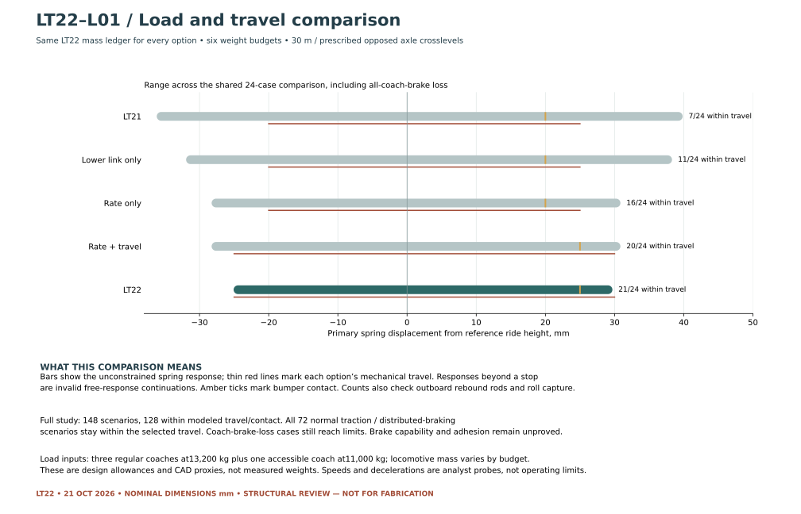

LT22 · ENGINEERING RECORD
Loads, travel and review limits.
This revision uses the current two-motor geometry, the four-coach load allowances and a signed inertia/coupler model. It compares five suspension arrangements and records both acceptable model responses and cases beyond the model’s travel limits.
This is a structural-review package. The mass budgets are unmeasured. The hydraulic system, independent locomotive brakes, brake distribution, axle guidance, coupler and track conditions are not released. A positive calculated wheel load does not establish derailment safety.
Reconciled load basis
The current CAD has one Poclain MS05 profile per powered truck, with a proposed 49/21 reduction and 1,450 mm drivers. Earlier single-H1B110, three-MS05 and four-MS05 calculations are historical alternatives. The H1P045 and Kubota engine remain candidates; Tony’s unspecified JCB alternative has not been substituted.
Four coaches: three regular at 13,200 kg plus one accessible at 11,000 kg = 50,600 kg upper allowance. Their allocation-empty total is 28,655 kg. Locomotive weights below come from updated CAD proxies and retained equipment allowances. The rear coupler height of 800 mm is a reserve centroid, not a completed hitch installation.
| Budget | Locomotive kg | Loaded consist kg | Powered axle rail loads F1 / F2 / R1 / R2, kN |
|---|---|---|---|
| base | 16069 | 66669 | 36.73 / 28.90 / 39.98 / 40.40 |
| low | 13700 | 64300 | 32.18 / 25.37 / 33.07 / 33.45 |
| high | 20411 | 71011 | 47.39 / 37.51 / 50.16 / 50.66 |
| rear-heavy | 15695 | 66295 | 31.12 / 23.29 / 43.76 / 44.18 |
| front-heavy | 15360 | 65960 | 40.73 / 32.90 / 32.50 / 32.92 |
| fuel-empty | 15943 | 66543 | 36.51 / 28.68 / 39.58 / 40.00 |
Hydraulic force, flow and power
Comparison inputs: two 376 cc motors; motor torque efficiency 0.90; chain efficiency 0.97; motor volumetric efficiency 0.95; pump efficiency 0.855. The 45 cc pump at 2,600 rpm and assumed 0.95 volumetric efficiency supplies 111.15 L/min. The main-pump shaft budget is an unapproved 40 kW trial, with 10 kW separately reserved for auxiliaries.
Q = 2 nwheel i V / ηvol; Ppump = (Δp + 10 bar) Q / (600 ηpump)
| Motor Δp, bar | mph | Uncapped force kN | Flow L/min | Pump kW | Force after 40 kW cap, kN | Result |
|---|---|---|---|---|---|---|
| 300 | 3 | 10.09 | 32.63 | 19.72 | 10.09 | Within trial flow/power |
| 300 | 5 | 10.09 | 54.38 | 32.86 | 10.09 | Within trial flow/power |
| 300 | 7.5 | 10.09 | 81.57 | 49.29 | 8.12 | Power or flow limit reached |
| 400 | 3 | 13.45 | 32.63 | 26.08 | 13.45 | Within trial flow/power |
| 400 | 5 | 13.45 | 54.38 | 43.46 | 12.35 | Power or flow limit reached |
| 400 | 7.5 | 13.45 | 81.57 | 65.19 | 8.12 | Power or flow limit reached |
The 250 / 300 / 400 bar values are comparison points, not relief-valve settings. The pressure, flow and speed limits cannot be combined independently. Supplier torque/efficiency maps, continuous engine output, pump shaft/coupling, charge/case circuits, control logic and chain ratings remain required.
Can this motor layout launch the loaded train?
The base consist uses 66.67 tonnes. Resistance coefficients are assumptions, with a 15% resistance allowance and 5% equivalent rotating-mass sensitivity for acceleration. The curve allowance is not calculated from the 30 m radius.
| Base-case demand | Rim force kN | Required motor Δp, bar | Within 300 bar force? | Within 400 bar force? |
|---|---|---|---|---|
| steady level | 5.26 | 157 | Yes | Yes |
| moderate launch | 13.27 | 395 | No | Yes |
| severe launch | 17.03 | 507 | No | No |
| adverse launch | 22.30 | 663 | No | No |
The two-motor arrangement needs rematching. Several loaded launch demands exceed its force at the comparison pressures. Increasing pressure alone is not an approved solution; displacement, reduction, flow, power, starting efficiency and adhesion must be resolved together.
Signed longitudinal loads
Positive force acts toward increasing locomotive X; negative values are braking / compressive drawbar cases. The powered trucks share rail force equally in this study. Link force differs from rail force because each truck has its own inertia. Normal distributed braking assumes the coaches provide their share of braking; a lost regular coach adds its 13,200 kg demand to the locomotive.
| Base load case | Total powered rail force kN | Each truck rail force kN | Rear coupler force kN |
|---|---|---|---|
| Level reference | 0.00 | 0.00 | 0.00 |
| Pull · 300 bar trial | 10.09 | 5.04 | 10.09 |
| Pull · power-limited 400 bar trial | 12.35 | 6.18 | 12.35 |
| Distributed braking · 0.5 m/s² | -8.03 | -4.02 | 0.00 |
| Distributed braking · 0.7 m/s² | -11.25 | -5.62 | 0.00 |
| One regular coach brake loss · 0.7 m/s² | -20.49 | -10.24 | -9.24 |
| All coach brakes lost · 0.5 m/s² | -33.33 | -16.67 | -25.30 |
| All coach brakes lost · 0.7 m/s² | -46.67 | -23.33 | -35.42 |
Ltruck = Frail,truck − Mtruck a
Truck pitch moment includes rail force, link height, truck inertia and equivalent wheel inertia.
Body pitch moment includes link forces, rear coupler and body / leading-truck inertia.
Why this suspension arrangement?
| Option | Link height mm | Primary N/mm | Compression / rebound mm | Within shared comparison |
|---|---|---|---|---|
| LT21 geometry/rate/travel | 1130 | 299.78 | +25 / −20 | 7 / 24 |
| Lower link only | 950 | 299.78 | +25 / −20 | 11 / 24 |
| Rate only | 1130 | 399.70 | +25 / −20 | 16 / 24 |
| Rate and travel | 1130 | 399.70 | +30 / −25 | 20 / 24 |
| LT22 lower link/rate/travel | 950 | 399.70 | +30 / −25 | 21 / 24 |

Load-and-travel table
148 scenarios cover six mass budgets, flat rail and both signs of opposed 10 mm axle crosslevels on a 30 m curve. Additional probes include reversible 400 bar force at 3 mph and signed sleeve drag using μ0.1. Speeds 3 / 5 mph and decelerations 0.5 / 0.7 m/s² are analyst demands, not operating limits.
Travel criteria: bumper contact at +25 mm, hard stop at +30 mm, rebound catch at 25 mm droop measured at the outboard rod, roll capture at ±16 mm. A flagged response continues the free-spring equations beyond an event; actual stop reaction and subsequent wheel loads are not predicted.
| Scenario | Rail force F / R, kN | Link force F / R, kN | Primary travel, mm | Rebound reserve, mm | Minimum wheel, kN | Largest unloading | Result / limitation |
|---|---|---|---|---|---|---|---|
| Level referencebase · flat · 0 mph | 0.00 / 0.00 | 0.00 / 0.00 | -0.00 to -0.00 | 25.00 | 14.45 | 0.0% | Within model travel/contact |
| Pull · 300 bar trialbase · flat · 3 mph | 5.04 / 5.04 | 5.04 / 5.04 | -4.68 to 4.71 | 20.18 | 12.48 | 13.6% | Within model travel/contact |
| Pull · 300 bar trialbase · twist right · 3 mph | 5.04 / 5.04 | 5.04 / 5.04 | -7.71 to 7.71 | 16.16 | 12.05 | 16.6% | Within model travel/contact |
| Pull · 300 bar trialbase · twist left · 3 mph | 5.04 / 5.04 | 5.04 / 5.04 | -8.30 to 8.30 | 15.57 | 11.43 | 20.9% | Within model travel/contact |
| Pull · power-limited 400 bar trialbase · flat · 5 mph | 6.18 / 6.18 | 6.18 / 6.18 | -6.54 to 6.62 | 18.06 | 11.55 | 20.0% | Within model travel/contact |
| Pull · power-limited 400 bar trialbase · twist right · 5 mph | 6.18 / 6.18 | 6.18 / 6.18 | -9.49 to 9.44 | 14.11 | 12.23 | 18.6% | Within model travel/contact |
| Pull · power-limited 400 bar trialbase · twist left · 5 mph | 6.18 / 6.18 | 6.18 / 6.18 | -10.17 to 10.22 | 13.45 | 10.51 | 27.3% | Within model travel/contact |
| Distributed braking · 0.5 m/s²base · flat · 5 mph | -4.02 / -4.02 | -2.13 / -2.32 | -4.96 to 5.05 | 19.65 | 14.53 | 12.3% | Within model travel/contact |
| Distributed braking · 0.5 m/s²base · twist right · 5 mph | -4.02 / -4.02 | -2.13 / -2.32 | -8.55 to 8.67 | 15.07 | 15.07 | 17.9% | Within model travel/contact |
| Distributed braking · 0.5 m/s²base · twist left · 5 mph | -4.02 / -4.02 | -2.13 / -2.32 | -7.55 to 7.42 | 16.05 | 13.49 | 14.9% | Within model travel/contact |
| Distributed braking · 0.7 m/s²base · flat · 5 mph | -5.62 / -5.62 | -2.98 / -3.25 | -6.35 to 6.45 | 18.25 | 14.91 | 15.4% | Within model travel/contact |
| Distributed braking · 0.7 m/s²base · twist right · 5 mph | -5.62 / -5.62 | -2.98 / -3.25 | -9.95 to 10.07 | 13.67 | 14.51 | 21.0% | Within model travel/contact |
| Distributed braking · 0.7 m/s²base · twist left · 5 mph | -5.62 / -5.62 | -2.98 / -3.25 | -8.50 to 8.37 | 15.10 | 13.87 | 16.8% | Within model travel/contact |
| One regular coach brake loss · 0.7 m/s²base · flat · 5 mph | -10.24 / -10.24 | -7.60 / -7.87 | -9.61 to 9.71 | 14.99 | 14.24 | 22.4% | Within model travel/contact |
| One regular coach brake loss · 0.7 m/s²base · twist right · 5 mph | -10.24 / -10.24 | -7.60 / -7.87 | -13.20 to 13.33 | 10.41 | 13.21 | 28.1% | Within model travel/contact |
| One regular coach brake loss · 0.7 m/s²base · twist left · 5 mph | -10.24 / -10.24 | -7.60 / -7.87 | -12.30 to 12.17 | 11.29 | 14.93 | 24.4% | Within model travel/contact |
| All coach brakes lost · 0.5 m/s²base · flat · 5 mph | -16.67 / -16.67 | -14.78 / -14.97 | -14.34 to 14.24 | 10.24 | 12.54 | 31.7% | Within model travel/contact |
| All coach brakes lost · 0.5 m/s²base · twist right · 5 mph | -16.67 / -16.67 | -14.78 / -14.97 | -17.47 to 17.59 | 6.15 | 11.51 | 37.4% | Within model travel/contact |
| All coach brakes lost · 0.5 m/s²base · twist left · 5 mph | -16.67 / -16.67 | -14.78 / -14.97 | -17.96 to 17.83 | 5.64 | 12.84 | 35.8% | Within model travel/contact |
| All coach brakes lost · 0.7 m/s²base · flat · 5 mph | -23.33 / -23.33 | -20.69 / -20.96 | -19.46 to 19.36 | 5.12 | 10.55 | 42.5% | Within model travel/contact |
| All coach brakes lost · 0.7 m/s²base · twist right · 5 mph | -23.33 / -23.33 | -20.69 / -20.96 | -22.43 to 22.57 | 1.18 | 9.52 | 48.2% | Within model travel/contact |
| All coach brakes lost · 0.7 m/s²base · twist left · 5 mph | -23.33 / -23.33 | -20.69 / -20.96 | -23.08 to 22.95 | 0.52 | 10.80 | 46.0% | Within model travel/contact |
| Level referencelow · flat · 0 mph | 0.00 / 0.00 | 0.00 / 0.00 | -7.28 to -2.98 | 17.72 | 12.69 | 0.0% | Within model travel/contact |
| Pull · 300 bar triallow · flat · 3 mph | 5.04 / 5.04 | 5.04 / 5.04 | -11.27 to -0.29 | 13.61 | 10.77 | 15.1% | Within model travel/contact |
| Pull · 300 bar triallow · twist right · 3 mph | 5.04 / 5.04 | 5.04 / 5.04 | -14.87 to 3.33 | 9.03 | 10.24 | 19.3% | Within model travel/contact |
| Pull · 300 bar triallow · twist left · 3 mph | 5.04 / 5.04 | 5.04 / 5.04 | -14.02 to 2.52 | 10.12 | 9.72 | 23.3% | Within model travel/contact |
| Pull · power-limited 400 bar triallow · flat · 5 mph | 6.18 / 6.18 | 6.18 / 6.18 | -12.82 to 1.23 | 11.85 | 9.94 | 21.6% | Within model travel/contact |
| Pull · power-limited 400 bar triallow · twist right · 5 mph | 6.18 / 6.18 | 6.18 / 6.18 | -16.42 to 4.85 | 7.27 | 10.32 | 21.3% | Within model travel/contact |
| Pull · power-limited 400 bar triallow · twist left · 5 mph | 6.18 / 6.18 | 6.18 / 6.18 | -14.06 to 2.63 | 10.28 | 8.90 | 29.9% | Within model travel/contact |
| Distributed braking · 0.5 m/s²low · flat · 5 mph | -3.42 / -3.42 | -1.76 / -1.93 | -10.47 to 0.20 | 14.21 | 12.80 | 11.7% | Within model travel/contact |
| Distributed braking · 0.5 m/s²low · twist right · 5 mph | -3.42 / -3.42 | -1.76 / -1.93 | -11.93 to 1.54 | 11.78 | 13.17 | 18.2% | Within model travel/contact |
| Distributed braking · 0.5 m/s²low · twist left · 5 mph | -3.42 / -3.42 | -1.76 / -1.93 | -14.09 to 3.80 | 9.60 | 11.75 | 16.1% | Within model travel/contact |
| Distributed braking · 0.7 m/s²low · flat · 5 mph | -4.79 / -4.79 | -2.47 / -2.70 | -11.29 to 1.02 | 13.39 | 13.12 | 14.7% | Within model travel/contact |
| Distributed braking · 0.7 m/s²low · twist right · 5 mph | -4.79 / -4.79 | -2.47 / -2.70 | -13.11 to 2.36 | 10.60 | 12.70 | 21.1% | Within model travel/contact |
| Distributed braking · 0.7 m/s²low · twist left · 5 mph | -4.79 / -4.79 | -2.47 / -2.70 | -14.91 to 4.62 | 8.78 | 12.08 | 18.1% | Within model travel/contact |
| One regular coach brake loss · 0.7 m/s²low · flat · 5 mph | -9.41 / -9.41 | -7.09 / -7.32 | -15.10 to 4.83 | 9.58 | 12.43 | 22.8% | Within model travel/contact |
| One regular coach brake loss · 0.7 m/s²low · twist right · 5 mph | -9.41 / -9.41 | -7.09 / -7.32 | -16.37 to 6.16 | 7.34 | 11.39 | 29.2% | Within model travel/contact |
| One regular coach brake loss · 0.7 m/s²low · twist left · 5 mph | -9.41 / -9.41 | -7.09 / -7.32 | -18.72 to 8.42 | 4.98 | 12.03 | 27.3% | Within model travel/contact |
| All coach brakes lost · 0.5 m/s²low · flat · 5 mph | -16.07 / -16.07 | -14.41 / -14.58 | -20.89 to 10.62 | 3.79 | 10.64 | 34.9% | Within model travel/contact |
| All coach brakes lost · 0.5 m/s²low · twist right · 5 mph | -16.07 / -16.07 | -14.41 / -14.58 | -22.15 to 11.95 | 2.19 | 9.60 | 40.3% | Within model travel/contact |
| All coach brakes lost · 0.5 m/s²low · twist left · 5 mph | -16.07 / -16.07 | -14.41 / -14.58 | -24.51 to 14.21 | -0.82 | 9.71 | 41.3% | rebound stop |
| All coach brakes lost · 0.7 m/s²low · flat · 5 mph | -22.50 / -22.50 | -20.18 / -20.41 | -25.88 to 15.61 | -1.20 | 8.74 | 47.0% | rebound stop |
| All coach brakes lost · 0.7 m/s²low · twist right · 5 mph | -22.50 / -22.50 | -20.18 / -20.41 | -27.14 to 16.94 | -2.80 | 7.70 | 52.1% | rebound stop |
| All coach brakes lost · 0.7 m/s²low · twist left · 5 mph | -22.50 / -22.50 | -20.18 / -20.41 | -29.50 to 19.20 | -5.81 | 7.72 | 53.3% | rebound stop |
| Level referencehigh · flat · 0 mph | 0.00 / 0.00 | 0.00 / 0.00 | 7.93 to 10.49 | 32.93 | 18.75 | 0.0% | Within model travel/contact |
| Pull · 300 bar trialhigh · flat · 3 mph | 5.04 / 5.04 | 5.04 / 5.04 | 3.08 to 14.78 | 27.88 | 16.69 | 11.0% | Within model travel/contact |
| Pull · 300 bar trialhigh · twist right · 3 mph | 5.04 / 5.04 | 5.04 / 5.04 | 0.86 to 18.38 | 25.07 | 16.46 | 12.2% | Within model travel/contact |
| Pull · 300 bar trialhigh · twist left · 3 mph | 5.04 / 5.04 | 5.04 / 5.04 | -0.56 to 18.37 | 23.27 | 15.64 | 16.6% | Within model travel/contact |
| Pull · power-limited 400 bar trialhigh · flat · 5 mph | 6.18 / 6.18 | 6.18 / 6.18 | 0.89 to 17.03 | 25.35 | 15.59 | 16.9% | Within model travel/contact |
| Pull · power-limited 400 bar trialhigh · twist right · 5 mph | 6.18 / 6.18 | 6.18 / 6.18 | 0.00 to 20.44 | 23.46 | 16.62 | 16.0% | Within model travel/contact |
| Pull · power-limited 400 bar trialhigh · twist left · 5 mph | 6.18 / 6.18 | 6.18 / 6.18 | -2.75 to 20.62 | 20.73 | 14.53 | 22.5% | Within model travel/contact |
| Distributed braking · 0.5 m/s²high · flat · 5 mph | -5.10 / -5.10 | -2.71 / -2.95 | 4.07 to 16.51 | 28.53 | 18.82 | 12.3% | Within model travel/contact |
| Distributed braking · 0.5 m/s²high · twist right · 5 mph | -5.10 / -5.10 | -2.71 / -2.95 | 0.49 to 20.14 | 23.96 | 19.75 | 16.7% | Within model travel/contact |
| Distributed braking · 0.5 m/s²high · twist left · 5 mph | -5.10 / -5.10 | -2.71 / -2.95 | 1.18 to 16.50 | 24.64 | 17.77 | 14.1% | Within model travel/contact |
| Distributed braking · 0.7 m/s²high · flat · 5 mph | -7.14 / -7.14 | -3.79 / -4.13 | 2.29 to 18.30 | 26.75 | 19.30 | 15.3% | Within model travel/contact |
| Distributed braking · 0.7 m/s²high · twist right · 5 mph | -7.14 / -7.14 | -3.79 / -4.13 | -1.29 to 21.93 | 22.19 | 19.03 | 19.7% | Within model travel/contact |
| Distributed braking · 0.7 m/s²high · twist left · 5 mph | -7.14 / -7.14 | -3.79 / -4.13 | -0.02 to 17.81 | 23.43 | 18.25 | 16.0% | Within model travel/contact |
| One regular coach brake loss · 0.7 m/s²high · flat · 5 mph | -11.76 / -11.76 | -8.41 / -8.75 | -0.96 to 21.55 | 23.50 | 18.77 | 20.8% | Within model travel/contact |
| One regular coach brake loss · 0.7 m/s²high · twist right · 5 mph | -11.76 / -11.76 | -8.41 / -8.75 | -4.55 to 25.18 | 18.93 | 17.73 | 25.2% | bumper engagement |
| One regular coach brake loss · 0.7 m/s²high · twist left · 5 mph | -11.76 / -11.76 | -8.41 / -8.75 | -3.82 to 21.50 | 19.63 | 19.55 | 22.0% | Within model travel/contact |
| All coach brakes lost · 0.5 m/s²high · flat · 5 mph | -17.75 / -17.75 | -15.36 / -15.60 | -5.59 to 25.42 | 18.85 | 17.22 | 27.3% | bumper engagement |
| All coach brakes lost · 0.5 m/s²high · twist right · 5 mph | -17.75 / -17.75 | -15.36 / -15.60 | -8.42 to 29.05 | 15.06 | 16.19 | 31.7% | bumper engagement |
| All coach brakes lost · 0.5 m/s²high · twist left · 5 mph | -17.75 / -17.75 | -15.36 / -15.60 | -9.22 to 26.89 | 14.24 | 17.39 | 30.6% | bumper engagement |
| All coach brakes lost · 0.7 m/s²high · flat · 5 mph | -24.85 / -24.85 | -21.50 / -21.84 | -10.96 to 30.77 | 13.48 | 15.08 | 36.4% | bumper engagement; hard compression stop |
| All coach brakes lost · 0.7 m/s²high · twist right · 5 mph | -24.85 / -24.85 | -21.50 / -21.84 | -13.76 to 34.40 | 9.72 | 14.05 | 40.7% | bumper engagement; hard compression stop |
| All coach brakes lost · 0.7 m/s²high · twist left · 5 mph | -24.85 / -24.85 | -21.50 / -21.84 | -14.59 to 32.26 | 8.87 | 15.25 | 39.2% | bumper engagement; hard compression stop |
| Level referencerear-heavy · flat · 0 mph | 0.00 / 0.00 | 0.00 / 0.00 | -7.05 to 4.75 | 17.95 | 11.63 | 0.1% | Within model travel/contact |
| Pull · 300 bar trialrear-heavy · flat · 3 mph | 5.04 / 5.04 | 5.04 / 5.04 | -11.67 to 9.44 | 13.20 | 9.70 | 16.7% | Within model travel/contact |
| Pull · 300 bar trialrear-heavy · twist right · 3 mph | 5.04 / 5.04 | 5.04 / 5.04 | -14.35 to 11.96 | 9.80 | 9.19 | 21.0% | Within model travel/contact |
| Pull · 300 bar trialrear-heavy · twist left · 3 mph | 5.04 / 5.04 | 5.04 / 5.04 | -15.30 to 13.04 | 8.59 | 8.65 | 25.7% | Within model travel/contact |
| Pull · power-limited 400 bar trialrear-heavy · flat · 5 mph | 6.18 / 6.18 | 6.18 / 6.18 | -13.45 to 11.33 | 11.19 | 8.85 | 24.0% | Within model travel/contact |
| Pull · power-limited 400 bar trialrear-heavy · twist right · 5 mph | 6.18 / 6.18 | 6.18 / 6.18 | -14.44 to 11.94 | 9.94 | 9.30 | 20.1% | Within model travel/contact |
| Pull · power-limited 400 bar trialrear-heavy · twist left · 5 mph | 6.18 / 6.18 | 6.18 / 6.18 | -17.08 to 14.93 | 6.58 | 7.80 | 33.0% | Within model travel/contact |
| Distributed braking · 0.5 m/s²rear-heavy · flat · 5 mph | -3.92 / -3.92 | -2.03 / -2.23 | -11.75 to 9.67 | 12.89 | 11.81 | 13.6% | Within model travel/contact |
| Distributed braking · 0.5 m/s²rear-heavy · twist right · 5 mph | -3.92 / -3.92 | -2.03 / -2.23 | -15.34 to 13.29 | 8.32 | 12.26 | 20.2% | Within model travel/contact |
| Distributed braking · 0.5 m/s²rear-heavy · twist left · 5 mph | -3.92 / -3.92 | -2.03 / -2.23 | -12.70 to 10.30 | 11.68 | 10.76 | 13.7% | Within model travel/contact |
| Distributed braking · 0.7 m/s²rear-heavy · flat · 5 mph | -5.49 / -5.49 | -2.85 / -3.12 | -13.10 to 11.03 | 11.54 | 12.18 | 17.0% | Within model travel/contact |
| Distributed braking · 0.7 m/s²rear-heavy · twist right · 5 mph | -5.49 / -5.49 | -2.85 / -3.12 | -16.69 to 14.66 | 6.97 | 11.88 | 23.7% | Within model travel/contact |
| Distributed braking · 0.7 m/s²rear-heavy · twist left · 5 mph | -5.49 / -5.49 | -2.85 / -3.12 | -14.05 to 11.67 | 10.32 | 11.13 | 15.4% | Within model travel/contact |
| One regular coach brake loss · 0.7 m/s²rear-heavy · flat · 5 mph | -10.11 / -10.11 | -7.47 / -7.74 | -16.36 to 14.29 | 8.28 | 11.61 | 25.4% | Within model travel/contact |
| One regular coach brake loss · 0.7 m/s²rear-heavy · twist right · 5 mph | -10.11 / -10.11 | -7.47 / -7.74 | -19.95 to 17.92 | 3.71 | 10.57 | 32.0% | Within model travel/contact |
| One regular coach brake loss · 0.7 m/s²rear-heavy · twist left · 5 mph | -10.11 / -10.11 | -7.47 / -7.74 | -17.31 to 14.93 | 7.07 | 12.07 | 22.4% | Within model travel/contact |
| All coach brakes lost · 0.5 m/s²rear-heavy · flat · 5 mph | -16.57 / -16.57 | -14.68 / -14.88 | -20.67 to 18.59 | 3.97 | 9.89 | 36.5% | Within model travel/contact |
| All coach brakes lost · 0.5 m/s²rear-heavy · twist right · 5 mph | -16.57 / -16.57 | -14.68 / -14.88 | -24.26 to 22.21 | -0.60 | 8.85 | 43.1% | rebound stop |
| All coach brakes lost · 0.5 m/s²rear-heavy · twist left · 5 mph | -16.57 / -16.57 | -14.68 / -14.88 | -21.62 to 19.22 | 2.76 | 10.35 | 33.5% | Within model travel/contact |
| All coach brakes lost · 0.7 m/s²rear-heavy · flat · 5 mph | -23.20 / -23.20 | -20.56 / -20.83 | -25.59 to 23.53 | -0.95 | 7.92 | 49.1% | rebound stop |
| All coach brakes lost · 0.7 m/s²rear-heavy · twist right · 5 mph | -23.20 / -23.20 | -20.56 / -20.83 | -29.18 to 27.15 | -5.52 | 6.89 | 55.8% | bumper engagement; rebound stop |
| All coach brakes lost · 0.7 m/s²rear-heavy · twist left · 5 mph | -23.20 / -23.20 | -20.56 / -20.83 | -26.54 to 24.16 | -2.16 | 8.38 | 46.2% | rebound stop |
| Level referencefront-heavy · flat · 0 mph | 0.00 / 0.00 | 0.00 / 0.00 | -9.39 to 5.04 | 15.61 | 16.24 | 0.1% | Within model travel/contact |
| Pull · 300 bar trialfront-heavy · flat · 3 mph | 5.04 / 5.04 | 5.04 / 5.04 | -13.41 to 9.07 | 11.46 | 14.49 | 11.9% | Within model travel/contact |
| Pull · 300 bar trialfront-heavy · twist right · 3 mph | 5.04 / 5.04 | 5.04 / 5.04 | -17.00 to 12.70 | 6.89 | 13.70 | 16.8% | Within model travel/contact |
| Pull · 300 bar trialfront-heavy · twist left · 3 mph | 5.04 / 5.04 | 5.04 / 5.04 | -16.08 to 11.75 | 8.06 | 13.44 | 18.3% | Within model travel/contact |
| Pull · power-limited 400 bar trialfront-heavy · flat · 5 mph | 6.18 / 6.18 | 6.18 / 6.18 | -15.03 to 10.71 | 9.62 | 13.55 | 17.6% | Within model travel/contact |
| Pull · power-limited 400 bar trialfront-heavy · twist right · 5 mph | 6.18 / 6.18 | 6.18 / 6.18 | -18.62 to 14.34 | 5.04 | 12.86 | 21.9% | Within model travel/contact |
| Pull · power-limited 400 bar trialfront-heavy · twist left · 5 mph | 6.18 / 6.18 | 6.18 / 6.18 | -16.06 to 11.70 | 8.31 | 12.51 | 24.0% | Within model travel/contact |
| Distributed braking · 0.5 m/s²front-heavy · flat · 5 mph | -3.84 / -3.84 | -1.95 / -2.14 | -12.97 to 8.68 | 11.68 | 14.51 | 10.7% | Within model travel/contact |
| Distributed braking · 0.5 m/s²front-heavy · twist right · 5 mph | -3.84 / -3.84 | -1.95 / -2.14 | -14.02 to 9.63 | 10.34 | 15.08 | 15.8% | Within model travel/contact |
| Distributed braking · 0.5 m/s²front-heavy · twist left · 5 mph | -3.84 / -3.84 | -1.95 / -2.14 | -16.59 to 12.27 | 7.07 | 13.46 | 17.2% | Within model travel/contact |
| Distributed braking · 0.7 m/s²front-heavy · flat · 5 mph | -5.38 / -5.38 | -2.73 / -3.00 | -13.89 to 9.60 | 10.76 | 14.14 | 13.3% | Within model travel/contact |
| Distributed braking · 0.7 m/s²front-heavy · twist right · 5 mph | -5.38 / -5.38 | -2.73 / -3.00 | -14.94 to 10.56 | 9.42 | 14.72 | 18.4% | Within model travel/contact |
| Distributed braking · 0.7 m/s²front-heavy · twist left · 5 mph | -5.38 / -5.38 | -2.73 / -3.00 | -17.51 to 13.19 | 6.16 | 13.10 | 19.4% | Within model travel/contact |
| One regular coach brake loss · 0.7 m/s²front-heavy · flat · 5 mph | -10.00 / -10.00 | -7.35 / -7.62 | -17.69 to 13.41 | 6.96 | 12.62 | 22.3% | Within model travel/contact |
| One regular coach brake loss · 0.7 m/s²front-heavy · twist right · 5 mph | -10.00 / -10.00 | -7.35 / -7.62 | -18.75 to 14.36 | 5.62 | 13.20 | 24.8% | Within model travel/contact |
| One regular coach brake loss · 0.7 m/s²front-heavy · twist left · 5 mph | -10.00 / -10.00 | -7.35 / -7.62 | -21.31 to 17.00 | 2.35 | 11.58 | 28.8% | Within model travel/contact |
| All coach brakes lost · 0.5 m/s²front-heavy · flat · 5 mph | -16.49 / -16.49 | -14.60 / -14.79 | -23.38 to 19.09 | 1.27 | 10.35 | 36.3% | Within model travel/contact |
| All coach brakes lost · 0.5 m/s²front-heavy · twist right · 5 mph | -16.49 / -16.49 | -14.60 / -14.79 | -24.44 to 20.04 | -0.07 | 10.92 | 33.3% | rebound stop |
| All coach brakes lost · 0.5 m/s²front-heavy · twist left · 5 mph | -16.49 / -16.49 | -14.60 / -14.79 | -27.01 to 22.68 | -3.34 | 9.30 | 42.8% | rebound stop |
| All coach brakes lost · 0.7 m/s²front-heavy · flat · 5 mph | -23.09 / -23.09 | -20.44 / -20.71 | -28.47 to 24.18 | -3.82 | 8.32 | 48.8% | rebound stop |
| All coach brakes lost · 0.7 m/s²front-heavy · twist right · 5 mph | -23.09 / -23.09 | -20.44 / -20.71 | -29.52 to 25.13 | -5.16 | 8.89 | 45.3% | bumper engagement; rebound stop |
| All coach brakes lost · 0.7 m/s²front-heavy · twist left · 5 mph | -23.09 / -23.09 | -20.44 / -20.71 | -32.09 to 27.77 | -8.42 | 7.27 | 55.3% | bumper engagement; rebound stop |
| Level referencefuel-empty · flat · 0 mph | 0.00 / 0.00 | 0.00 / 0.00 | -0.50 to -0.27 | 24.50 | 14.34 | 0.0% | Within model travel/contact |
| Pull · 300 bar trialfuel-empty · flat · 3 mph | 5.04 / 5.04 | 5.04 / 5.04 | -4.94 to 4.19 | 19.92 | 12.37 | 13.7% | Within model travel/contact |
| Pull · 300 bar trialfuel-empty · twist right · 3 mph | 5.04 / 5.04 | 5.04 / 5.04 | -8.20 to 7.43 | 15.67 | 11.94 | 16.7% | Within model travel/contact |
| Pull · 300 bar trialfuel-empty · twist left · 3 mph | 5.04 / 5.04 | 5.04 / 5.04 | -8.56 to 7.79 | 15.31 | 11.33 | 21.0% | Within model travel/contact |
| Pull · power-limited 400 bar trialfuel-empty · flat · 5 mph | 6.18 / 6.18 | 6.18 / 6.18 | -6.78 to 6.09 | 17.83 | 11.46 | 20.1% | Within model travel/contact |
| Pull · power-limited 400 bar trialfuel-empty · twist right · 5 mph | 6.18 / 6.18 | 6.18 / 6.18 | -9.96 to 9.14 | 13.65 | 12.11 | 18.7% | Within model travel/contact |
| Pull · power-limited 400 bar trialfuel-empty · twist left · 5 mph | 6.18 / 6.18 | 6.18 / 6.18 | -10.41 to 9.68 | 13.22 | 10.41 | 27.4% | Within model travel/contact |
| Distributed braking · 0.5 m/s²fuel-empty · flat · 5 mph | -3.99 / -3.99 | -2.10 / -2.29 | -5.16 to 4.48 | 19.45 | 14.43 | 12.2% | Within model travel/contact |
| Distributed braking · 0.5 m/s²fuel-empty · twist right · 5 mph | -3.99 / -3.99 | -2.10 / -2.29 | -8.75 to 8.10 | 14.87 | 14.99 | 17.9% | Within model travel/contact |
| Distributed braking · 0.5 m/s²fuel-empty · twist left · 5 mph | -3.99 / -3.99 | -2.10 / -2.29 | -8.00 to 7.11 | 15.61 | 13.38 | 15.0% | Within model travel/contact |
| Distributed braking · 0.7 m/s²fuel-empty · flat · 5 mph | -5.58 / -5.58 | -2.93 / -3.21 | -6.55 to 5.87 | 18.07 | 14.81 | 15.3% | Within model travel/contact |
| Distributed braking · 0.7 m/s²fuel-empty · twist right · 5 mph | -5.58 / -5.58 | -2.93 / -3.21 | -10.14 to 9.49 | 13.49 | 14.43 | 20.9% | Within model travel/contact |
| Distributed braking · 0.7 m/s²fuel-empty · twist left · 5 mph | -5.58 / -5.58 | -2.93 / -3.21 | -8.95 to 8.05 | 14.66 | 13.76 | 16.9% | Within model travel/contact |
| One regular coach brake loss · 0.7 m/s²fuel-empty · flat · 5 mph | -10.20 / -10.20 | -7.55 / -7.83 | -9.80 to 9.13 | 14.81 | 14.17 | 22.4% | Within model travel/contact |
| One regular coach brake loss · 0.7 m/s²fuel-empty · twist right · 5 mph | -10.20 / -10.20 | -7.55 / -7.83 | -13.40 to 12.75 | 10.23 | 13.13 | 28.1% | Within model travel/contact |
| One regular coach brake loss · 0.7 m/s²fuel-empty · twist left · 5 mph | -10.20 / -10.20 | -7.55 / -7.83 | -12.75 to 11.85 | 10.85 | 14.83 | 24.6% | Within model travel/contact |
| All coach brakes lost · 0.5 m/s²fuel-empty · flat · 5 mph | -16.64 / -16.64 | -14.75 / -14.94 | -14.79 to 13.93 | 9.80 | 12.46 | 31.8% | Within model travel/contact |
| All coach brakes lost · 0.5 m/s²fuel-empty · twist right · 5 mph | -16.64 / -16.64 | -14.75 / -14.94 | -17.67 to 17.02 | 5.95 | 11.42 | 37.4% | Within model travel/contact |
| All coach brakes lost · 0.5 m/s²fuel-empty · twist left · 5 mph | -16.64 / -16.64 | -14.75 / -14.94 | -18.42 to 17.52 | 5.19 | 12.66 | 36.0% | Within model travel/contact |
| All coach brakes lost · 0.7 m/s²fuel-empty · flat · 5 mph | -23.29 / -23.29 | -20.64 / -20.92 | -19.90 to 19.03 | 4.69 | 10.48 | 42.6% | Within model travel/contact |
| All coach brakes lost · 0.7 m/s²fuel-empty · twist right · 5 mph | -23.29 / -23.29 | -20.64 / -20.92 | -22.63 to 21.98 | 1.00 | 9.44 | 48.3% | Within model travel/contact |
| All coach brakes lost · 0.7 m/s²fuel-empty · twist left · 5 mph | -23.29 / -23.29 | -20.64 / -20.92 | -23.53 to 22.63 | 0.08 | 10.62 | 46.3% | Within model travel/contact |
| Reversible 400 bar sensitivitybase · twist right · 3 mph | -6.73 / -6.73 | -6.73 / -6.73 | -8.86 to 8.92 | 15.01 | 15.13 | 17.6% | Within model travel/contact |
| Reversible 400 bar sensitivitybase · twist right · 3 mph | 6.73 / 6.73 | 6.73 / 6.73 | -8.89 to 8.89 | 14.97 | 11.50 | 20.4% | Within model travel/contact |
| Sleeve friction sensitivity · μ0.1base · twist right · 5 mph | -5.62 / -5.62 | -1.72 / -0.14 | -9.97 to 10.37 | 13.64 | 14.50 | 21.0% | Within model travel/contact |
| Sleeve friction sensitivity · μ0.1base · twist right · 5 mph | -5.62 / -5.62 | -4.24 / -6.36 | -9.92 to 9.78 | 13.70 | 14.52 | 20.9% | Within model travel/contact |
| Reversible 400 bar sensitivityhigh · twist right · 3 mph | -6.73 / -6.73 | -6.73 / -6.73 | 1.46 to 19.11 | 25.28 | 20.32 | 14.1% | Within model travel/contact |
| Reversible 400 bar sensitivityhigh · twist right · 3 mph | 6.73 / 6.73 | 6.73 / 6.73 | -0.52 to 19.56 | 23.69 | 15.90 | 15.2% | Within model travel/contact |
| Sleeve friction sensitivity · μ0.1high · twist right · 5 mph | -7.14 / -7.14 | -1.60 / 0.13 | -1.38 to 22.32 | 22.10 | 19.00 | 19.8% | Within model travel/contact |
| Sleeve friction sensitivity · μ0.1high · twist right · 5 mph | -7.14 / -7.14 | -5.99 / -8.40 | -1.20 to 21.54 | 22.27 | 19.07 | 19.5% | Within model travel/contact |
| Reversible 400 bar sensitivityfront-heavy · twist right · 3 mph | -6.73 / -6.73 | -6.73 / -6.73 | -18.09 to 13.69 | 6.05 | 13.27 | 18.3% | Within model travel/contact |
| Reversible 400 bar sensitivityfront-heavy · twist right · 3 mph | 6.73 / 6.73 | 6.73 / 6.73 | -18.19 to 13.88 | 5.70 | 13.22 | 19.7% | Within model travel/contact |
| Sleeve friction sensitivity · μ0.1front-heavy · twist right · 5 mph | -5.38 / -5.38 | -0.67 / -1.39 | -15.31 to 10.98 | 9.06 | 14.57 | 18.7% | Within model travel/contact |
| Sleeve friction sensitivity · μ0.1front-heavy · twist right · 5 mph | -5.38 / -5.38 | -4.79 / -4.62 | -14.58 to 10.13 | 9.79 | 14.86 | 18.1% | Within model travel/contact |
| Reversible 400 bar sensitivityrear-heavy · twist right · 3 mph | -6.73 / -6.73 | -6.73 / -6.73 | -15.86 to 13.66 | 8.03 | 12.35 | 20.6% | Within model travel/contact |
| Reversible 400 bar sensitivityrear-heavy · twist right · 3 mph | 6.73 / 6.73 | 6.73 / 6.73 | -15.73 to 13.35 | 8.41 | 8.64 | 25.8% | Within model travel/contact |
| Sleeve friction sensitivity · μ0.1rear-heavy · twist right · 5 mph | -5.49 / -5.49 | -2.71 / 0.75 | -16.57 to 15.08 | 7.09 | 11.93 | 23.4% | Within model travel/contact |
| Sleeve friction sensitivity · μ0.1rear-heavy · twist right · 5 mph | -5.49 / -5.49 | -2.98 / -6.99 | -16.81 to 14.24 | 6.84 | 11.83 | 24.0% | Within model travel/contact |
Download every scenario as CSV
Primary spring targets
Eight coils: wire 21 mm, mean diameter 117 mm, three active / five total turns; shear modulus 79,000 MPa gives 399.70 N/mm. Nominal installed length 162 mm; estimated solid height 105 mm; length at +30 mm is 132 mm, leaving 27 mm nominal solid clearance.
| Axle | Reference kN per spring | Free height mm | Reference shear MPa | Shear at +25 MPa | Shear at +30 MPa |
|---|---|---|---|---|---|
| FRONT-1 | 12.68 | 193.73 | 520 | 930 | 1012 |
| FRONT-2 | 8.77 | 183.93 | 359 | 769 | 851 |
| REAR-1 | 14.31 | 197.80 | 587 | 996 | 1078 |
| REAR-2 | 14.52 | 198.32 | 595 | 1005 | 1087 |
Wire stresses include the Wahl correction and are not allowable stresses. Select wire grade, heat treatment, presetting, end geometry and fatigue life with the spring supplier. Nonparallel seats, spring bow, preload adjustment, tolerances and damping remain open.
The four LT21 roll cartridges remain 750 N/mm and 8 kN reference preload each, with ±16 mm capture. A roll spring unloads at 10.67 mm extension. The primary bumper remains a procurement target: 0–20 kN over 5 mm, or 50 J for a linear force curve. No supplier bumper is selected.
Pins, brackets, welds and guides
The traction eyes retain Ø50 pins, 160 mm clear clevises and 180 mm bearing-centre span. Body-end pins now put the head on +Y and the M36 castle nut / split pin on −Y. Four 12 mm stiffeners support the deeper body cheeks. Existing M24 rebound locks move 5 mm upward to provide the new droop setting.
| Gross-section probe | Demand |
|---|---|
| Largest sampled longitudinal link force | 21.84 kN |
| Retained reversible attachment probe | 80 kN — not a specified collision load |
| Ø50 pin bending / double shear | 293.4 / 20.4 MPa |
| Ø50/30 link axial stress | 63.7 MPa |
| Ungusseted long body cheek screen | 337.2 MPa — stiffener dependence must be resolved |
| Single rebound-restraint sensitivity | 40.91 kN; 3 × high unsprung estimate |
| M24 rod nominal thread-area stress | 115.9 MPa; notch/fatigue excluded |
| Lower Ø30 pin bending / double shear | 223.8 / 28.9 MPa |
| M16 guide-bracket upper-row bolt tension | 21.82 kN each; prying excluded |
| Guide flange average supported-area pressure | 12.4 MPa; flange bending excluded |
Nominal fillet-weld schedule
| ID | Joint | Leg mm | Direct throat shear MPa | Additional screen / limitation |
|---|---|---|---|---|
| W1 | Body crosshead end web to main rail, each end | 8 | 9.8 | 38.2 peak shear |
| W2 | Traction cheek to cap, both sides of each cheek | 8 | 32.1 | Gross direct throat only; four12 mm stiffeners carry the eccentricity. Coupled plate/weld analysis required |
| W3 | Truck bridge to cage neck, each70×50 neck | 8 | 29.5 | 117.1 bending |
| W4 | Primary stop base to lower spring seat | 6 | 16.7 | Circumferential weld; impact and lower-seat flexibility held |
These welds and section demands are proposed dimensions for review. Specify certified material grades, fasteners, weld procedure and fatigue allowables before fabrication. Resolve HSS wall bending, prying, weld access, stiffener force sharing, rod eye/thread fatigue, washer/flange bending and thread engagement. The guide bushing restrains rebound and rod whip; it does not resolve the axle’s traction guidance.
30 m geometry and service access
31 sampled positions: 0 rigid, 0 wheel-disk and 0 spring-envelope intersections. The extended travel, revised pins, full wheel disks and primary/roll spring envelopes are included. Eight additional placements use the limiting normal load-study positions, with independent front/rear tilt and axle motion.
Unchanged parts that move relative to the body are rechecked. Same-motion legacy joints retain their earlier evidence. Chain guards and motor shapes are reservations, rods use one crank phase, and compliant bumpers are excluded from rigid intersections. No continuous sweep, tolerances, deflection, full crank cycle or tire/rail dynamics approval is claimed.
Maximum sampled pivot slide 3.839 mm within the ±10 mm capture; main bearing misalignment 3.217°, link bearing 4.960°. Supplier bearing ratings, wear, abutments and seizure/catch cases remain open.
2 nominal main-pin removal paths report 0 intersections. The lowered traction link can remain fitted during the sampled 250 mm aft withdrawal. Remove the main-pin nut, washer and cotter first. Independent body/truck support, lifting points, tooling and a maintenance procedure are still required.
Model limits and structural-review handoff
- Seven small-angle coordinates; compression-only coils; no bumper/hard-stop reaction after engagement. Flagged free responses are extrapolations.
- Horizontal-link nominal-force approximation. Inclined-link vertical forces, exact load-dependent kinematics and friction hysteresis require a full multibody model.
- 0.05 equivalent rotational mass is an analyst sensitivity, assigned to powered trucks; actual wheel/motor/chain inertias unknown.
- Equal longitudinal rail-force split between powered trucks is a control/brake assumption, not an accepted circuit.
- Leading truck carries only its own vertical mass. Its inertia is transmitted at an assumed850 mm tow height.
- Coupler height800 is a retained reserve centroid, not a completed locomotive hitch.
- No frame elasticity, damping, actual axle guidance, flange contact, wheel-slip control, brake delay or thermal model.
- Unmeasured mass budgets and assumed rail twist. Positive wheel force is not a derailment-safety proof.
- 0.5/0.7 m/s² and3/5 mph are study demands, not certified operating settings.
Next decisions: match the two-motor drivetrain to the loaded consist; establish actual locomotive and coach brake capacity and fault response; qualify the springs, bearings, sliding sleeve and attachments; weigh the vehicle and survey track twist. Resolve the flagged stop events with a nonlinear model and vehicle tests before release.
Records and primary references
- Poclain MS05/MSE05 catalog: 376 cc Classic candidate and catalog family limits; not a system selection
- Danfoss H1P045/053: Retained LT6 June2025 document review: pump family, displacement, pressure and shaft limits
- Danfoss driveline selection: Force, torque, gearing, flow and power must be matched together